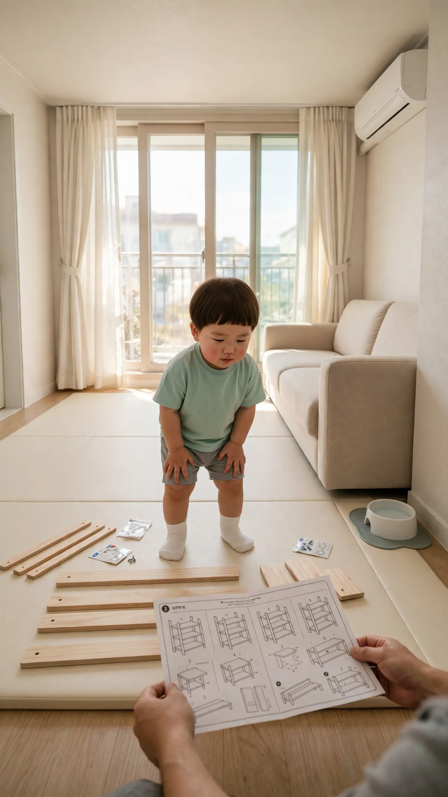
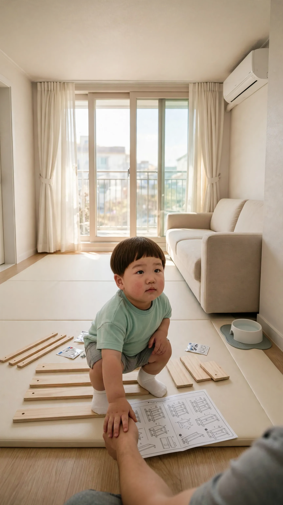
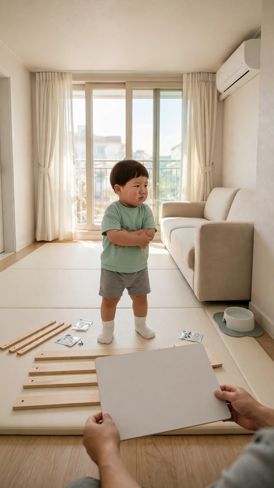
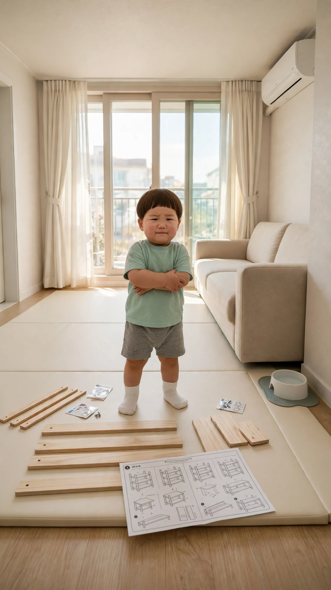

🎬 모르면 엄마 불러
4컷 · 24초 · 🟦 표시 컷은 도윤이 입 다묾 · 실패하면 같은 걸로 2~3번 다시 걸기
1번 컷
⏱ 6초도윤: 「아빠 뭐 해?」


[Character Action & Continuity] Realistic Korean slice-of-life short video clip. an ordinary modern South Korean apartment living room in Korea. Maintain exact appearance from start frame: a 24-month-old Korean toddler boy wearing a mint green short-sleeve t-shirt, gray shorts and white socks. Scale: a small 24-month-old toddler build with natural proportions. Adult position: the off-screen adult stands on the living room floor on the camera side, so the adult's hands and forearms reach into the frame from the bottom edge of the frame. [0-2s] Doyoon looks at the sheet in the father's hands and asks his line right away, curious [2-6s] the father's hands turn the sheet upside down; Doyoon tilts his head [Dialogue Script & Emotion] 도윤 (단독 발화, 0초부터 바로): (궁금하다는 듯 고개를 내밀고) "아빠 뭐 해?" [Audio & Voice Specifications] Single Voice Track Only: Definite 18 to 24-month-old Korean INFANT TODDLER boy voice. Low-pitched, cute, raspy little boy toddler voice. Strictly NOT a school-age child, NOT female. Sound Format: Solo toddler voice in a quiet room. Background Sound: Quiet indoor room tone. Continuous steady indoor room air. [Technical Directives] 카메라: 매트 위 판자와 아빠 손, 도윤이 얼굴이 보이는 미디엄 샷. 카메라 고정. 화면: 도윤이와 방만 보인다. 벽과 가구 표면은 무늬 없이 비어 있다. 도윤이 입모양 100% 완벽 립싱크.
2번 컷
⏱ 6초도윤: 「모르면 엄마 불러.」


[Character Action & Continuity] Realistic Korean slice-of-life short video clip. an ordinary modern South Korean apartment living room in Korea. Maintain exact appearance from start frame: a 24-month-old Korean toddler boy wearing a mint green short-sleeve t-shirt, gray shorts and white socks. Scale: a small 24-month-old toddler build with natural proportions. Adult position: the off-screen adult stands on the living room floor on the camera side, so the adult's hands and forearms reach into the frame from the bottom edge of the frame. [0-3s] Doyoon pats the father's forearm and says his line right away, very serious [3-6s] Doyoon nods firmly twice [Dialogue Script & Emotion] 도윤 (단독 발화, 0초부터 바로): (선생님처럼 다정하지만 단호하게) "모르면 엄마 불러." [Audio & Voice Specifications] Single Voice Track Only: Definite 18 to 24-month-old Korean INFANT TODDLER boy voice. Low-pitched, cute, raspy little boy toddler voice. Strictly NOT a school-age child, NOT female. Sound Format: Solo toddler voice in a quiet room. Background Sound: Quiet indoor room tone. Continuous steady indoor room air. [Technical Directives] 카메라: 아빠 팔을 토닥이는 도윤이 얼굴이 보이는 미디엄 샷. 카메라 고정. 화면: 도윤이와 방만 보인다. 벽과 가구 표면은 무늬 없이 비어 있다. 도윤이 입모양 100% 완벽 립싱크.
3번 컷
⏱ 6초🟦 아빠(화면 밖): 「아빠 할 수 있어~」


[Character Action & Continuity] Realistic Korean slice-of-life short video clip. an ordinary modern South Korean apartment living room in Korea. Maintain exact appearance from start frame: a 24-month-old Korean toddler boy wearing a mint green short-sleeve t-shirt, gray shorts and white socks. Scale: a small 24-month-old toddler build with natural proportions. Adult position: the off-screen adult stands on the living room floor on the camera side, so the adult's hands and forearms reach into the frame from the bottom edge of the frame. Doyoon stays silent and just listens; only the father speaks. [0-3s] the father's hands lift the board and the father says his line right away [3-6s] Doyoon narrows his eyes, doubtful [Dialogue Script & Emotion] 아빠(화면 밖), 0초부터 바로: (살짝 멋쩍지만 밝게 큰소리치듯) "아빠 할 수 있어~" [Audio & Voice Specifications] Single Voice Track Only: One Korean man in his early 30s, the boy's father, whose face stays outside the frame, speaking in a relaxed, slightly embarrassed but cheerful voice. Sound Format: One adult man voice in a quiet room. Background Sound: Quiet indoor room tone. Continuous steady indoor room air. [Technical Directives] 카메라: 판자를 든 아빠 손과 팔짱 낀 도윤이가 보이는 미디엄 샷. 카메라 고정. 화면: 도윤이와 방만 보인다. 벽과 가구 표면은 무늬 없이 비어 있다. 말소리는 화면 밖 아빠 목소리 하나, 도윤이는 입을 다문다.
4번 컷
⏱ 6초도윤: 「아빠 이거 모르잖아.」


[Character Action & Continuity] Realistic Korean slice-of-life short video clip. an ordinary modern South Korean apartment living room in Korea. Maintain exact appearance from start frame: a 24-month-old Korean toddler boy wearing a mint green short-sleeve t-shirt, gray shorts and white socks. Scale: a small 24-month-old toddler build with natural proportions. [0-3s] Doyoon shakes his head slowly and says his line right away to the camera [3-6s] Doyoon shrugs with both palms up [Dialogue Script & Emotion] 도윤 (단독 발화, 0초부터 바로): (다 안다는 듯 담담하게) "아빠 이거 모르잖아." [Audio & Voice Specifications] Single Voice Track Only: Definite 18 to 24-month-old Korean INFANT TODDLER boy voice. Low-pitched, cute, raspy little boy toddler voice. Strictly NOT a school-age child, NOT female. Sound Format: Solo toddler voice in a quiet room. Background Sound: Quiet indoor room tone. Continuous steady indoor room air. [Technical Directives] 카메라: 카메라를 보는 도윤이 미디엄 샷. 카메라 고정. 화면: 도윤이와 방만 보인다. 벽과 가구 표면은 무늬 없이 비어 있다. 도윤이 입모양 100% 완벽 립싱크.